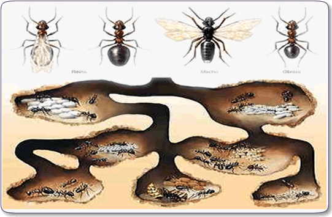
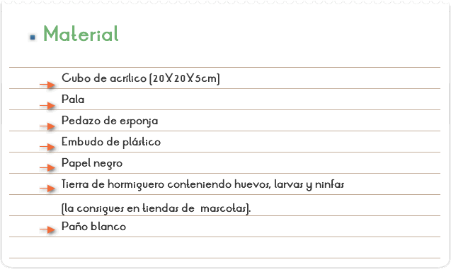
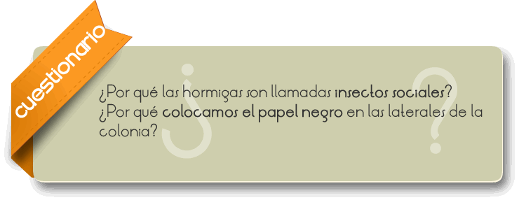

Un hormiguero o colonia de hormigas es el conjunto de túneles, entradas y montículos de tierra donde habitan las hormigas. El montículo (comúnmente de tierra o arcilla) sobre la colonia subterránea, es parte de la colonia y es construido progresivamente por las hormigas, con la misma tierra que extraen del suelo. El montículo es aprovechado por las hormigas para evitar que la colonia subterránea se inunde en tiempos de lluvia y es aprovechado casi de la misma forma que la colonia subterránea. Toda la colonia está repleta de túneles sobre y bajo el suelo.

Observar y estudiar una colonia de hormigas.

1. Buscar un hormiguero de especies rojas y excavar en vuelta, haciendo una especie de trinchera.
2. Recoger, cuidadosamente parte del suelo y de las hormigas en un paño blanco.
3. Examinar el contenido para verificar si la reina está entre las especies recogidas, pues sin ella las operarias no sobrevivirán.
4. Poner la tierra dentro del recipiente y sobre ella la esponja mojada ocupando aproximadamente 2/3 del espacio.
5. Tapar el recipiente y, a través del agujero, introducir un embudo de plástico por donde deberá poner, cuidadosamente, las hormigas.
6. Cubrir con papel negro los vidrios, para que las hormigas hagan túneles próximos a ellos, para facilitar la observación.
7. Tapar el agujero con algodón, para que las hormigas no puedan salir de la colonia.
8. Poner, todos los días, a través del agujero, alimento para las hormigas: agua azucarada, miel y hojas. Mantener la esponja siempre húmeda.

Las hormigas son un grupo de insectos sociales bien organizados que viven en colonias, a donde cada grupo tiene su función determinada. Existen hormigas por todas las partes. Hacen sus nidos bajo el suelo, corteza de los árboles y en casas. Entre las hembras existen las operarias y las reinas. Las reinas y los machos de la mayoría de las especies poseen a las, más las operarias no. Después de copular, la reina arranca sus alas y crea su propia colonia.
Para armar la colonia, los alumnos deben intentar obtener cantidades razonables de huevos, larvas y ninfas. Es importante proveer humedad a las hormigas. Por eso, se pone la esponja húmeda sobre la tierra. La alimentación puede ser hecha con miel, insectos, pedazos de torta el pan y pedazos de frutas variadas. Las hormigas solo construirán túneles próximos a la orilla del pote si hay oscuridad, por eso, los lados de la colonia deben ser cubiertos por papel negro, y ese papel es retirado apenas cuando se esté observando la colonia.